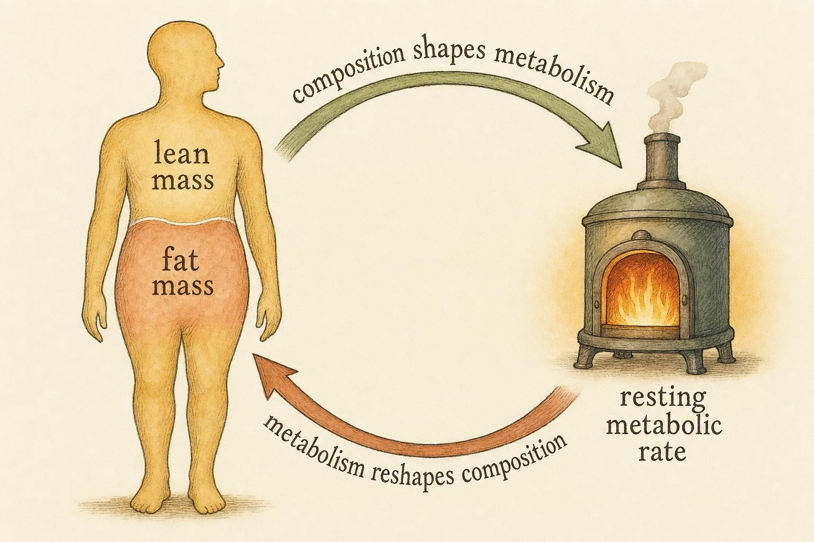
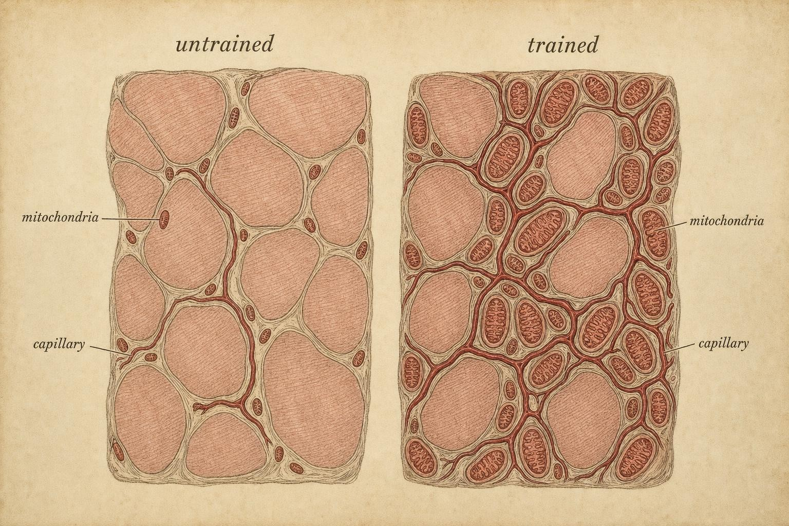

Putting It All Together: Energy, Body Composition, and Performance
One framework linking the fuel you burn, the tissue you carry, and the effort you produce.
Imagine two people standing at the base of the same hill, watches synchronized, told simply to reach the top as fast as they can. One is a sprinter, all fast-twitch power and explosive intent. The other is a trained distance runner, unremarkable at a standstill but relentless once moving. For the first ten seconds the sprinter pulls ahead. By thirty seconds the gap has closed. By two minutes the distance runner is gone, and the sprinter is doubled over, legs burning, gasping. Nothing about their intentions differed. What differed was the machinery inside their muscles and the fuel that machinery preferred, and how each person's body had been shaped by months of very different demands.
Everything you have studied in this course meets on that hill. This final chapter is not a summary that restates the pieces. It is an integration that shows how the pieces are one system, and it hands you the habit of reasoning that lets you keep learning about that system honestly, long after this course is behind you.
To get there, we will retrace the whole arc of the course in a single line of reasoning. Chapters 2 and 3 gave you the three energy systems that regenerate the cell's fuel. Chapter 4 gave you the vast, slow-burning fat reserve that those systems can draw on. Chapters 5 through 7 gave you fuel selection, the thresholds that mark a shift in strategy, and the training adaptations that move those thresholds. This chapter adds the piece that ties the others into a body you can see and weigh: the tissue itself, the energy economy that maintains it, and the honest arithmetic that explains how it changes, or fails to change, over months and years.
Alongside the physiology, the course has also asked you to practice a specific habit of mind: naming a mechanism, sizing its effect, and refusing to accept a conclusion that outruns the evidence behind it. That habit is exercised throughout this chapter and is the actual point of the exercise, more than any single number you memorize along the way.
The two-way street between body composition and metabolism
Let us begin with a term that has quietly shadowed the entire course without ever taking center stage: body composition. Body composition is simply the proportion of your body mass that is fat mass versus the proportion that is lean mass, where lean mass, sometimes called fat-free mass, includes muscle, bone, organs, connective tissue, and the water inside them. A person weighing seventy kilograms can be composed of very different ratios of these two compartments, and those ratios matter for how the whole energy economy behaves. In a research or clinical setting, this ratio is usually estimated with dual-energy X-ray absorptiometry, an imaging method abbreviated DXA that distinguishes bone mineral, lean soft tissue, and fat by how differently each absorbs two low-dose X-ray energies. Simpler field methods, such as skinfold calipers or bioelectrical impedance analysis, trade some precision for convenience, but all of them are estimating the same underlying two-compartment idea.
The relationship between this composition and your metabolism runs in both directions, which is the single most important idea in this chapter. Composition shapes metabolism, and metabolism reshapes composition. Consider the first direction. Your resting metabolic rate, abbreviated RMR, is the amount of energy your body spends to stay alive at complete rest, and it is dominated by lean tissue. This is not a vague generalization; it has been measured organ by organ. A mechanistic analysis that modeled the specific metabolic rate of individual organs and tissues found that the liver, brain, heart, and kidneys are extraordinarily expensive per kilogram, together accounting for a large share of resting energy expenditure despite making up only a small fraction of total body mass, while skeletal muscle is far cheaper per gram but present in large enough quantity to still contribute substantially, and adipose tissue is metabolically the least expensive of the major compartments (Wang et al., 2010). Two people of identical body weight but different composition can therefore have meaningfully different resting energy needs, driven mostly by how much lean tissue, and specifically how much of that metabolically expensive organ mass and muscle, each one carries.
Now the second direction. The fat mass a person carries is the vast energy reserve you met in Chapter 4, when you learned that even a lean individual stores tens of thousands of kilocalories in adipose tissue, enough to fuel days of continuous moderate work, compared with only a couple of thousand kilocalories of stored carbohydrate as muscle and liver glycogen. That reserve exists precisely because the metabolic systems you studied in Chapters 2 and 3 are built to draw on it whenever intensity is low enough and time is long enough to allow it. And over weeks and months, the balance between the energy you take in and the energy your metabolism spends will slowly move the fat and lean compartments up or down, which in turn changes the resting metabolic rate we just discussed, which in turn changes the energy balance again. Composition is thus both an input to the energy economy and an output of it, a loop rather than a one-way arrow, and keeping that loop in mind will keep you from treating body weight as a simple dial that responds instantly and linearly to any single choice.

Composition is both an input to the energy economy and an output of it." data-image-idx="0" style="display:block;max-width:100%;max-height:75vh;height:auto;width:auto;margin:0 auto;cursor:pointer;">Three systems, one continuous blend
Return to the hill. To explain why the sprinter and the distance runner traded the lead, we need the three energy systems you studied in Chapters 2 and 3, but now understood as a single blend rather than three separate engines that switch on and off in turn. All three exist for one purpose: to regenerate adenosine triphosphate, abbreviated ATP, the molecule that is the cell's immediate and universal energy currency. Muscle cannot store much ATP directly, so it must be resynthesized continuously, and the three systems are simply three different strategies for doing that resynthesis at different speeds and for different durations.
The phosphagen system regenerates ATP using a small store of creatine phosphate already sitting in the muscle, transferring its high-energy phosphate group directly onto spent ATP. It requires no oxygen and produces power almost instantly, but its fuel store is tiny, exhausting within roughly ten seconds of all-out effort. The glycolytic system breaks down carbohydrate, specifically muscle glycogen and blood glucose, without requiring oxygen, delivering large power quickly but generating hydrogen ions that acidify the muscle and limit how long it can sustain that output. The oxidative system, running inside the mitochondria, the cell's specialized organelles for aerobic energy production, uses oxygen to extract energy from carbohydrate and fat completely and cleanly through a process called oxidative phosphorylation, producing far more ATP per fuel molecule than glycolysis alone but at a lower maximum rate of power.
The crucial correction to the popular picture is that these three do not take turns. They all contribute at once, and their relative contributions shift continuously with the duration and intensity of effort. A recent systematic review of maximal exercise bouts of varying durations confirms exactly this graded interaction. Across methodologies, the phosphagen and glycolytic systems dominate the earliest seconds of maximal effort, while oxidative phosphorylation rises steadily and, by around the one to two minute mark of all-out work, is already supplying roughly half of the total energy demand (Gastin & Suppiah, 2026). Put a few concrete events on that curve and the pattern becomes intuitive. A 100 meter sprint, lasting under ten seconds, is won and lost almost entirely on phosphagen availability and raw contractile power, with the glycolytic system only beginning to matter as the race extends into its final strides. An 800 meter race, lasting roughly two minutes, sits squarely in the zone where glycolysis and oxidative metabolism are both working hard and trading dominance, which is exactly why that event punishes pacing mistakes so severely. A marathon, lasting hours, is run almost entirely on the oxidative system, with the phosphagen and glycolytic systems reserved for the finishing kick.
The blend, then, is the answer to the question "what limits performance in this event." For a very brief maximal effort, the limit is phosphagen availability and raw contractile power. For an effort of roughly thirty seconds to two minutes, the limit is how much power the glycolytic system can deliver against rising acidity. For anything sustained beyond a few minutes, the limit shifts decisively toward the oxidative system, and therefore toward the mitochondria and the fuels they can oxidize, which is exactly where the next two sections go.
Fuel selection, thresholds, and the crossover
Once effort is sustained long enough for the oxidative system to matter, a second question arises: which fuel does that system burn, carbohydrate or fat? Both can be oxidized, and the body constantly mixes them. One way this mixture is measured in a laboratory is the respiratory exchange ratio, abbreviated RER, the ratio of carbon dioxide produced to oxygen consumed as measured at the mouth; a ratio near 0.70 indicates fat is supplying nearly all the fuel, while a ratio near 1.00 indicates carbohydrate is. The framework that describes how this mix shifts with intensity is the crossover concept, introduced by Brooks and Mercier (1994).
Their idea is elegant. At low exercise intensities, fat oxidation predominates, because there is plenty of time for the relatively slow process of mobilizing and burning fat, and the power demand is modest. As intensity rises, the balance tips toward carbohydrate, because carbohydrate can be broken down faster to meet the higher power demand. The crossover point is the exercise intensity at which the energy from carbohydrate begins to exceed the energy from fat. Below it, fat leads; above it, carbohydrate leads.
What makes the crossover concept more than a description is its second half: endurance training moves the crossover point. A trained person burns proportionally more fat at any given submaximal intensity, which pushes the crossover to a higher power output (Brooks & Mercier, 1994). This is the same person, on the same hill, now able to run faster before their fuel mix tips heavily toward their limited carbohydrate stores. Because carbohydrate depletion is one of the classic causes of fatigue in prolonged effort, sparing it by burning more fat has a direct performance consequence: the trained runner reaches exhaustion later. The phenomenon of hitting a hard wall of fatigue when glycogen runs low is not folklore; it was demonstrated experimentally more than half a century ago, when researchers manipulated the glycogen content of muscle through diet and showed directly that time to exhaustion during sustained cycling tracked the starting glycogen concentration (Bergström et al., 1967). Carbohydrate depletion is a real, mechanistic fatigue limiter, and every strategy that spares glycogen, including the training-induced shift toward fat oxidation, buys additional time before that limit is reached.
It is worth distinguishing this fuel-selection threshold from a related but different one you may have encountered: the lactate threshold, the exercise intensity above which blood lactate begins to accumulate faster than it can be cleared. The crossover point describes which fuel dominates; the lactate threshold describes when the glycolytic contribution and the resulting acid load begin to outrun the body's buffering and clearance capacity. The two thresholds are driven by the same underlying oxidative capacity and tend to shift together with training, but they are answering different questions, one about fuel choice and one about a specific fatigue-related byproduct, and a careful reader keeps them conceptually separate even while recognizing how tightly they are linked in practice.
This capacity to shift fuel use appropriately has a name of its own. Metabolic flexibility is the ability of the body to adjust which fuel it oxidizes in response to what is available and what is demanded (Goodpaster & Sparks, 2017). A metabolically flexible person burns fat readily when fasting or exercising gently, switches efficiently to carbohydrate after a carbohydrate-rich meal or during hard effort, and moves between these states without difficulty. The concept, first coined by Kelley and colleagues in 1999, has become central to metabolic physiology precisely because its absence is informative. Metabolic inflexibility, the sluggish or blunted ability to switch fuels, is associated with obesity, insulin resistance, the cluster of features known as metabolic syndrome, and type 2 diabetes (Smith et al., 2018). That is an association observed across populations in careful research studies; it is not a diagnostic test you can perform on yourself or a label to apply to an individual from general principles, and we will return to that distinction carefully below, because it is a place where honest reasoning matters most.
Why fitness improves: the mitochondrion tells the story
We have said the trained runner has "more developed oxidative machinery" and can "push the crossover higher." But a good education never leaves a mechanism as a black box. What physically changes inside the muscle when someone trains, and why does that produce every downstream benefit we have described?
The answer is one of the most durable findings in exercise physiology. In their seminal review, Holloszy and Coyle (1984) established that endurance exercise training increases the mitochondrial content and respiratory capacity of skeletal muscle. Put plainly, trained muscle contains more mitochondria, and those mitochondria have a greater capacity to consume oxygen and oxidize fuel. This single structural adaptation cascades into every benefit we have named.
Consider the consequences the authors document. With more mitochondrial capacity, a muscle oxidizes more fat at any given submaximal intensity, which is the mechanistic basis of the crossover shift. It depletes its limited glycogen more slowly, which delays the carbohydrate-depletion form of fatigue you just read about. And it produces less lactate at any given intensity, because a greater share of pyruvate can be fed directly into oxidative metabolism rather than being converted to lactate (Holloszy & Coyle, 1984). Notice how tightly this connects the threads: the mitochondrial adaptation is not a separate topic from the crossover, the lactate threshold, or metabolic flexibility. It is the physical cause of all three.
Mitochondrial growth does not happen by accident, and naming the trigger closes the loop between "you trained" and "your muscle changed." Repeated bouts of exercise activate intracellular signaling molecules, most notably an energy-sensing enzyme called AMP-activated protein kinase, abbreviated AMPK, and a master regulatory protein called peroxisome proliferator-activated receptor gamma coactivator 1-alpha, abbreviated PGC-1alpha, which together turn on the genetic programs that build new mitochondria, a process known as mitochondrial biogenesis (Egan & Zierath, 2013). The same training stimulus that raises AMPK and PGC-1alpha activity also drives an increase in capillary density around the muscle fibers, improving the delivery of oxygen and fuel, an increase in myoglobin, the oxygen-storing protein inside muscle cells, and an increase in the activity of key oxidative enzymes such as citrate synthase, a commonly used laboratory marker of oxidative capacity. None of these adaptations act in isolation; they are a coordinated remodeling of the muscle's capacity to sustain aerobic work.
This remodeling also connects to a term you may recognize from broader fitness discussions: maximal oxygen uptake, abbreviated VO2max, the highest rate at which a person's body can consume oxygen during maximal exertion, generally regarded as the single best laboratory index of aerobic fitness. VO2max is the product of two factors, how much blood the heart can pump per minute and how much oxygen the working tissues extract from that blood. Training improves both sides: central adaptations in the heart increase the pumping side, while the peripheral, muscle-level adaptations described above, more mitochondria, more capillaries, more myoglobin, increase how much of the delivered oxygen the muscle can actually use. This is why fitness improves. Not through willpower, and not through some vague notion of the body "getting used to" exercise, but through a concrete, named, and traceable chain of molecular signals, structural adaptations, and improved oxygen delivery and extraction. When you can name the organelle, the signaling molecule, and the downstream effect, you have replaced a slogan with a mechanism.

More and better mitochondria: the structural change beneath every endurance adaptation." data-image-idx="1" style="display:block;max-width:100%;max-height:75vh;height:auto;width:auto;margin:0 auto;cursor:pointer;">Energy balance, honestly accounted
We now have the machinery. To connect it to body composition over time, we need an honest accounting of how much energy the body actually spends in a day, and where common claims about that accounting go wrong.
Total daily energy expenditure, abbreviated TDEE, is the sum of everything your body spends across twenty-four hours. It has three main parts. First is resting metabolic rate, the baseline cost of staying alive, which as we have seen is driven largely by lean mass and typically accounts for the majority of the total, often somewhere in the neighborhood of sixty to seventy percent in a sedentary person. Second is the thermic effect of food, the modest energy cost of digesting, absorbing, and processing what you eat, typically around ten percent of intake, though protein carries a noticeably higher thermic cost per kilocalorie than fat or carbohydrate. Third is activity energy expenditure, which itself splits into deliberate exercise and non-exercise activity thermogenesis, abbreviated NEAT, a term that captures all the incidental movement of daily life, from fidgeting to walking to standing to simply maintaining posture. NEAT varies enormously between individuals and can be a larger swing factor in daily energy expenditure than most people expect.
The gold-standard way to measure total daily energy expenditure in freely living people, rather than in a laboratory chamber, is the doubly labelled water technique, in which a person drinks water whose hydrogen and oxygen atoms carry harmless heavy isotopes, and the differential rate at which those isotopes leave the body over one to two weeks reveals how much carbon dioxide was produced, and therefore how much energy was spent (Westerterp, 2017b). This method has quietly overturned several intuitions.
Here is the first correction. There is a ceiling on sustainable activity. Doubly labelled water studies show that even vigorously active people reach a maximum physical activity level, abbreviated PAL and defined as total daily energy expenditure divided by resting metabolic rate, of roughly two to two and a half times resting metabolic rate, sustained over the long term (Westerterp, 2017a). You cannot indefinitely spend energy at any rate you please simply by moving more.
Here is the second, more subtle correction, and it dismantles a popular assumption. When people increase their exercise, the increase in activity energy expenditure is often partially offset by reductions elsewhere: less spontaneous non-exercise movement, and a modest decline in resting expenditure (Westerterp, 2017a). This phenomenon of compensation means that adding exercise does not add its full energetic cost to the daily total in a simple, additive way. It does not mean exercise is pointless. It means the arithmetic is more forgiving of the body's regulatory tendencies than a naive calculation assumes.
A related correction concerns how weight change unfolds over time rather than as a single static number. Because resting metabolic rate depends on lean and fat mass, as established earlier in this chapter, and because both compartments typically shrink somewhat during sustained weight loss, total daily energy expenditure itself drifts downward as body mass falls. Detailed modeling of this dynamic process shows that the old rule of thumb equating a fixed number of kilocalories of deficit to a fixed amount of weight lost, applied as a constant, badly overstates long-term results, because it ignores this feedback loop between shrinking body mass and falling energy requirements (Hall et al., 2011). The first law of thermodynamics, energy is neither created nor destroyed, still holds perfectly; what changes is that the two sides of the equation are not independent of each other. A smaller body costs less to run, so the same daily habits that produced a given rate of change early on will produce a slower rate of change later, without any failure of willpower or any exotic metabolic damage required to explain it. This is the two-way street from the opening section, now visible as a concrete curve rather than an abstract idea.
Two myths, retired with evidence, and one more worth a mention
With the accounting in hand, we can now do what this course has asked of you throughout: grade some of the most stubborn popular claims against the actual evidence.
The afterburn is not a fat-loss engine
The first myth concerns what is technically called excess post-exercise oxygen consumption, abbreviated EPOC and popularly nicknamed the "afterburn," the elevated energy expenditure that continues for a while after a workout ends while the body restores oxygen stores, clears metabolic byproducts, and returns hormone levels to baseline. The claim is that this afterburn "melts fat all day." The honest grade is that the afterburn is real but small. It is a genuine physiological phenomenon, but its magnitude is modest relative to the total energy of a day, and it cannot bear the weight placed on it by marketing. When you view it inside the doubly labelled water accounting, where even total activity has a firm ceiling and is subject to compensation, the notion that a brief post-exercise elevation drives substantial fat loss on its own does not survive (Westerterp, 2017a). The mechanism exists; the magnitude does not justify the claim.
Starvation mode is a distortion of a real, modest effect
The second myth is the mirror image: that eating too little triggers a "starvation mode" that permanently wrecks your metabolism and makes further change impossible. Here the evidence is unusually clear, because we can revisit one of the most famous studies in the field. The Minnesota Starvation Experiment, conducted in the 1940s, subjected volunteers to prolonged severe caloric restriction. A modern reanalysis quantified the real effect, called adaptive thermogenesis, which is the reduction in resting energy expenditure that occurs during restriction beyond what the loss of body tissue alone would predict (Müller et al., 2015).
Adaptive thermogenesis is real. But its measured size in normal-weight subjects was on the order of about one hundred kilocalories per day (Müller et al., 2015). That is a genuine downward adjustment, and it does attenuate the rate of weight loss, which is worth understanding. But it is neither a metabolic catastrophe nor a permanent trap. It slows the process; it does not halt it, and it does not represent irreversible damage. A focused review of metabolic adaptation specifically in athletes reaches a compatible conclusion: dieting athletes can show measurable reductions in resting metabolic rate and shifts in reproductive and thyroid hormones during aggressive, prolonged energy restriction, effects that are real, physiologically meaningful, and a legitimate reason for caution in how restriction is approached, but that are also generally reversible once adequate energy intake resumes (Trexler et al., 2014). The distance between "a modest, sometimes larger in lean or heavily restricted individuals, but ultimately reversible reduction in expenditure" and "your metabolism is permanently broken" is exactly the distance between honest evidence and a myth.
Spot reduction misattributes where fat comes from
A third claim is worth retiring alongside the other two, because it draws on a mechanism error rather than a magnitude error, which makes it a useful contrast. The claim is that exercising a specific body part, doing many abdominal exercises to lose fat over the abdomen, for instance, preferentially burns the fat stored at that location. It does not. Contracting a muscle burns fuel, including some fat, to power that specific muscle's contractions, drawing on local glycogen and on fatty acids delivered through the bloodstream, but the fat mobilized from adipose tissue elsewhere in the body enters that same shared bloodstream. Which adipose depots release fat fastest is governed by regional differences in blood flow and hormone sensitivity, not by which muscle happens to be working nearby, and that regional pattern is influenced heavily by genetics, sex, and hormonal status rather than by exercise choice. Training a muscle builds and conditions that muscle; it does not selectively drain the fat sitting on top of it. This is a mechanism claim, not a magnitude claim, and stating it plainly is the appropriate honest correction.
One further point of intellectual honesty. Persistent, unexplained changes in energy, weight, temperature tolerance, or fatigue are not something to diagnose from a textbook framework. Genuine metabolic or thyroid dysfunction is a clinical question. So is a suspected pattern of chronic under-fueling in an athlete, a state formally described as relative energy deficiency in sport, abbreviated RED-S, in which insufficient energy intake relative to exercise energy expenditure and lean body mass disrupts menstrual function, bone health, immune function, and performance itself, often well before body weight changes noticeably (Mountjoy et al., 2018). The right response to any of these suspected patterns is evaluation by a qualified professional, not self-management guided by the general principles in this course. Understanding the mechanisms makes you a better-informed patient, teammate, or coach; it does not make you your own physician.
Body recomposition: changing lean mass and fat mass together
The two-way street between composition and metabolism, together with an honest energy balance model, lets us reason carefully about a question people ask constantly: can you lose fat and gain muscle at the same time, a process usually called body recomposition? The mechanistic answer is that the two processes draw on somewhat different, though overlapping, conditions, so the honest answer is "sometimes, and to a degree that depends heavily on training status and how the energy balance is managed," rather than a flat yes or no.
Building lean tissue is a matter of providing a strong enough mechanical stimulus, principally resistance training, together with adequate protein and enough total energy to support tissue synthesis. Research on athletes' protein needs consistently finds that intakes well above the minimum required to prevent deficiency, though still well within the range achievable through ordinary food choices, support greater gains in lean mass when combined with resistance training than lower intakes do, and that protein needs scale with training load and the goal of preserving or building muscle during any period of energy restriction (Phillips & Van Loon, 2011). Losing fat mass, meanwhile, requires a sustained energy deficit, spending more than is taken in, so that the body draws on the reserve described in Chapter 4. These two conditions, a deficit for fat loss and ample building material plus stimulus for lean gain, are not perfectly opposed, but they do pull in different directions, which is precisely why recomposition tends to proceed fastest in people newer to resistance training, whose muscle has the most room to respond to a novel stimulus, and more slowly, in smaller increments, in people who are already highly trained.
None of this changes the underlying accounting from the previous sections; it only shows the accounting applied to two compartments at once instead of one. A sustained large energy deficit undertaken to accelerate fat loss will tend to blunt the lean-mass-building side of the equation, and can, if severe or prolonged enough on top of heavy training, tip toward the reversible but genuine metabolic and hormonal effects described in the myths section above, or in athletes, toward the more serious low energy availability pattern captured by relative energy deficiency in sport (Mountjoy et al., 2018). A more moderate approach to the deficit, adequate protein, and resistance training that provides a real stimulus to the muscle are the mechanistic levers available, and how aggressively to pull any one of them is a matter of individual context and goals rather than a universal formula this chapter can hand you.
This interaction with the energy balance concepts from earlier in the chapter is not incidental. The same compensatory reduction in spontaneous non-exercise movement that can blunt the effectiveness of added exercise, described earlier as part of honest total daily energy expenditure accounting, tends to become more pronounced during sustained dieting, further narrowing the practical deficit actually achieved even when planned intake and exercise are held constant on paper. This is one more reason recomposition, and fat loss generally, are better understood as a slow negotiation with a responsive system than as a fixed arithmetic exercise performed once and left alone.
The trained muscle depletes its glycogen more slowly, oxidizes more fat, and produces less lactate at any given intensity. One structural change, many consequences.
After Holloszy and Coyle, 1984
Performance limiters across the event spectrum
With the full framework assembled, body composition and resting metabolism, the three-system blend, fuel selection and thresholds, mitochondrial adaptation, and honest energy accounting, we can put it to work explaining why different events reward different bodies and different training histories, which is the most direct test of whether the framework actually holds together.
A 100 meter sprinter is limited almost entirely by phosphagen availability and the sheer contractile power of fast-twitch muscle fibers. Extra mitochondrial density buys this athlete little, since the event ends before oxidative metabolism becomes a major contributor, but body composition still matters enormously in a different way: a higher ratio of powerful lean tissue to total mass improves the power-to-weight ratio that determines acceleration. A marathon runner sits at the opposite end. Here the oxidative system, its mitochondrial density, its capillary supply, and the crossover point that determines how long glycogen lasts, are the entire game, and carrying excess fat mass is a direct performance cost, since it is mass that must be moved uphill and along the course for hours without contributing proportional force, while carrying too little total energy reserve, particularly in the context of low overall energy availability, risks the hormonal and bone-health consequences described earlier as relative energy deficiency in sport.
Middle-distance events, and the repeated-sprint demands of most team sports, are the most genuinely integrative case, because they require rapid resynthesis of phosphagen stores between efforts, and that resynthesis itself depends on oxidative metabolism; a well-developed aerobic system, the same system built by the mitochondrial adaptations described earlier, allows the phosphagen system to recover faster between sprints, so that an athlete's tenth sprint of a match looks more like their first. This is a clean illustration of why treating the three energy systems as one blend, rather than three isolated boxes, is not a pedantic distinction. The oxidative system is not just "the aerobic one"; it is also the recovery engine that services the other two between bursts of effort.
Across all of these cases, the same variables keep reappearing in different proportions: how much lean, metabolically active tissue a person carries and what that does to resting requirements and power-to-weight; how large and well-supplied the mitochondrial pool is and what that does to fuel selection and fatigue resistance; and how honestly the day's total energy accounting is managed, given the ceilings and compensations described earlier. Different events weight these variables differently, but none of them is ever irrelevant, which is exactly what you would expect from a single integrated system rather than a collection of separate topics.
Individual variability: why identical training does not produce identical results
Everything above describes population-level, mechanism-level truths, but a natural question follows: if two people complete the identical training program, will they get identical results? The evidence says no, and understanding why prevents overpromising from any framework, including this one. In the HERITAGE Family Study, a large controlled trial that put more than four hundred sedentary adults through an identical, closely supervised twenty-week endurance training program, the resulting gains in maximal oxygen uptake ranged widely from one participant to the next, and shared family membership explained a substantial share of that variability, indicating a real genetic contribution to how much any given training stimulus improves the oxidative machinery described earlier in this chapter (Bouchard et al., 1999). Some people are, all else equal, high responders whose mitochondrial and cardiovascular adaptations proceed rapidly on a modest training load; others are comparatively low responders who require more volume, more time, or a more targeted stimulus to achieve a similar percentage gain, and a small minority show little measurable change in maximal oxygen uptake despite good adherence to the same program.
This does not undermine anything established earlier in the chapter. The mechanisms, mitochondrial biogenesis through AMP-activated protein kinase and PGC-1alpha signaling, the crossover shift, the ceiling on total daily energy expenditure, operate in every physiologically normal body. What varies between people is the size of the gain, not the existence of the underlying biology. The same logic extends to body composition change under a given energy deficit: individual differences in compensatory shifts in non-exercise activity thermogenesis and in the size of adaptive thermogenesis mean that two people matched on paper for energy in and energy out can show different rates of change, without either one representing a metabolic anomaly. Recognizing this variability is itself part of graded, honest reasoning: a program's average effect in a study is a real and useful number, but it describes a group, and applying it to predict one specific person's outcome requires acknowledging the width of the distribution around that average rather than assuming a single dose-response curve fits everyone equally.
Reasoning about mechanism and evidence, independently
Notice the shape of what we just did with the myths earlier in this chapter. We did not simply declare them false, nor did we uncritically accept them. We asked three questions in sequence, and those three questions are the durable tool this course wants you to keep.
First, what is the underlying mechanism? A claim always implies a physical cause. The afterburn implies excess post-exercise oxygen consumption. Starvation mode implies adaptive thermogenesis. Spot reduction implies that regional muscle contraction controls regional fat mobilization, which is simply the wrong location for the real mechanism, systemic hormonal signaling and regional blood flow, to operate. Muscle soreness is often blamed on lactic acid, but the actual mechanism is delayed damage and inflammation in the muscle, and lactate is cleared within hours, long before soreness peaks a day or two later. Naming the real mechanism is the first act of honest reasoning, because many myths survive only by leaving the mechanism vague, or by pointing at a mechanism that is real but simply not the one responsible for the claimed effect.
Second, how strong is the evidence, and how large is the effect? A mechanism can be entirely real and still be too small to support the claim built on it. Adaptive thermogenesis is real at about one hundred kilocalories per day in normal-weight subjects, which is genuine but modest, even if it can run somewhat larger in athletes undergoing aggressive, prolonged restriction (Müller et al., 2015; Trexler et al., 2014). Metabolic inflexibility is a real and clinically meaningful association with disease, but that is a correlation studied in populations, not a license to diagnose an individual (Goodpaster & Sparks, 2017; Smith et al., 2018). Distinguishing the existence of an effect from the magnitude of an effect, and distinguishing a population-level association from an individual diagnosis, is the second act.
Third, does the conclusion follow? This is where most myths fail. The mechanism is real, the effect is measurable, and then the claim inflates a small true effect into a large false conclusion, or attaches a real effect to the wrong target entirely. The single word for the first failure, the answer to the retrieval question earlier, is magnitude. The afterburn myth and the starvation-mode myth both take a real, small effect and exaggerate its magnitude beyond what the evidence allows. The single word for the spot-reduction failure is location: the mechanism named is real, but it is pointed at the wrong place in the body.
You now have a complete mental model. Any given body makes energy through a continuous blend of three systems, selects between carbohydrate and fat according to intensity and training, improves through concrete, named mitochondrial and vascular adaptations, spends energy within honest and ceiling-bounded daily accounting, and slowly reshapes its own composition as a result, a reshaping that then feeds back into how much energy it spends the next day. And you have a method for keeping that model honest: name the mechanism, size the effect, check the target, and confirm that the conclusion actually follows. Keep those questions, and you will be able to read almost any claim in this field, trace its mechanism, and grade its evidence long after this course ends. When a claim reaches beyond general physiology into a specific, persistent, or worsening personal symptom, the same honesty requires recognizing the limit of a textbook framework and referring the question to a qualified clinician rather than reasoning it out alone.
Key Takeaways
- Body composition and metabolism form a two-way street: lean mass drives resting energy needs through metabolically expensive organs and muscle, while the daily energy balance slowly reshapes the fat and lean compartments, which then changes resting needs again.
- The phosphagen, glycolytic, and oxidative systems are one continuous blend, not three switches; their proportions shift with duration and intensity, which is why a 100 meter sprint, an 800 meter race, and a marathon are each limited by a different part of the same system.
- The crossover concept, the distinct lactate threshold, and metabolic flexibility together describe fuel selection and its limits; endurance training pushes the crossover higher by increasing fat oxidation at submaximal intensity and spares glycogen against the classic, experimentally demonstrated wall of carbohydrate depletion.
- Increased mitochondrial density, capillary supply, and myoglobin, driven by signaling molecules such as AMP-activated protein kinase and PGC-1alpha, is the traceable structural chain underneath improved fitness, slower glycogen depletion, more fat oxidation, less lactate, and a higher maximal oxygen uptake.
- Total daily energy expenditure has a real ceiling, is subject to compensation, and shifts as body composition changes, so simple fixed-rate weight-change rules of thumb do not hold precisely over time even though the underlying thermodynamics never breaks.
- The afterburn is real but small, and adaptive thermogenesis is real but modest, roughly one hundred kilocalories per day and generally reversible; both are magnitude errors, not fabrications.
- Spot reduction is a location error: regional muscle contraction does not preferentially mobilize the fat stored at that location, because mobilized fat enters a shared bloodstream governed by systemic hormones and regional blood flow.
- Body recomposition, gaining lean mass while losing fat, is genuinely possible but is shaped by training status, protein intake, and how aggressively the energy deficit is managed, with more room for simultaneous change in less trained individuals.
- Grade any claim in a sequence: name the mechanism, size the effect, check that the mechanism is pointed at the right target, and confirm the conclusion follows. Most myths fail on magnitude or location, not on the existence of the underlying mechanism.
- Suspected metabolic or thyroid dysfunction, and suspected relative energy deficiency in sport in athletes, are clinical questions warranting qualified professional evaluation, not textbook self-management.
This is the final chapter, but the method is designed to outlast it. The next claim you encounter about energy, fitness, or body composition will not come with a citation attached. Bring the questions to it anyway: what is the mechanism, how large is the effect, is it pointed at the right target, and does the conclusion follow? That habit is the real credential you leave this course with.
References
Bergström, J., Hermansen, L., Hultman, E., & Saltin, B. (1967). Diet, muscle glycogen and physical performance. Acta Physiologica Scandinavica, 71(2), 140-150. https://doi.org/10.1111/j.1748-1716.1967.tb03720.x
Bouchard, C., An, P., Rice, T., Skinner, J. S., Wilmore, J. H., Gagnon, J., Pérusse, L., Leon, A. S., & Rao, D. C. (1999). Familial aggregation of VO2max response to exercise training: Results from the HERITAGE Family Study. Journal of Applied Physiology, 87(3), 1003-1008. https://doi.org/10.1152/jappl.1999.87.3.1003
Brooks, G. A., & Mercier, J. (1994). Balance of carbohydrate and lipid utilization during exercise: The "crossover" concept. Journal of Applied Physiology, 76(6), 2253-2261. https://doi.org/10.1152/jappl.1994.76.6.2253
Egan, B., & Zierath, J. R. (2013). Exercise metabolism and the molecular regulation of skeletal muscle adaptation. Cell Metabolism, 17(2), 162-184. https://doi.org/10.1016/j.cmet.2012.12.012
Gastin, P. B., & Suppiah, H. (2026). Anaerobic and aerobic energy system contribution during maximal exercise: A systematic review. Sports Medicine. https://doi.org/10.1007/s40279-026-02414-7
Goodpaster, B. H., & Sparks, L. M. (2017). Metabolic flexibility in health and disease. Cell Metabolism, 25(5), 1027-1036. https://doi.org/10.1016/j.cmet.2017.04.015
Hall, K. D., Sacks, G., Chandramohan, D., Chow, C. C., Wang, Y. C., Gortmaker, S. L., & Swinburn, B. A. (2011). Quantification of the effect of energy imbalance on bodyweight. The Lancet, 378(9793), 826-837. https://doi.org/10.1016/S0140-6736(11)60812-X
Holloszy, J. O., & Coyle, E. F. (1984). Adaptations of skeletal muscle to endurance exercise and their metabolic consequences. Journal of Applied Physiology, 56(4), 831-838. https://doi.org/10.1152/jappl.1984.56.4.831
Mountjoy, M., Sundgot-Borgen, J., Burke, L., Ackerman, K. E., Blauwet, C., Constantini, N., Lebrun, C., Lundy, B., Melin, A., Meyer, N., Sherman, R., Tenforde, A. S., Torstveit, M. K., & Budgett, R. (2018). IOC consensus statement on relative energy deficiency in sport (RED-S): 2018 update. British Journal of Sports Medicine, 52(11), 687-697. https://doi.org/10.1136/bjsports-2018-099193
Müller, M. J., Enderle, J., Pourhassan, M., Braun, W., Eggeling, B., Lagerpusch, M., Glüer, C. C., Kehayias, J. J., Kiosz, D., & Bosy-Westphal, A. (2015). Metabolic adaptation to caloric restriction and subsequent refeeding: The Minnesota Starvation Experiment revisited. The American Journal of Clinical Nutrition, 102(4), 807-819. https://doi.org/10.3945/ajcn.115.109173
Phillips, S. M., & Van Loon, L. J. C. (2011). Dietary protein for athletes: From requirements to optimum adaptation. Journal of Sports Sciences, 29(Suppl 1), S29-S38. https://doi.org/10.1080/02640414.2011.619204
Smith, R. L., Soeters, M. R., Wüst, R. C. I., & Houtkooper, R. H. (2018). Metabolic flexibility as an adaptation to energy resources and requirements in health and disease. Endocrine Reviews, 39(4), 489-517. https://doi.org/10.1210/er.2017-00211
Trexler, E. T., Smith-Ryan, A. E., & Norton, L. E. (2014). Metabolic adaptation to weight loss: Implications for the athlete. Journal of the International Society of Sports Nutrition, 11, 7. https://doi.org/10.1186/1550-2783-11-7
Wang, Z., Heshka, S., Gallagher, D., Boozer, C. N., Kotler, D. P., & Heymsfield, S. B. (2010). Specific metabolic rates of major organs and tissues across adulthood: Evaluation by mechanistic model of resting energy expenditure. The American Journal of Clinical Nutrition, 92(6), 1369-1377. https://doi.org/10.3945/ajcn.2010.29885
Westerterp, K. R. (2017a). Exercise, energy expenditure and energy balance, as measured with doubly labelled water. Proceedings of the Nutrition Society, 77(1), 4-10. https://doi.org/10.1017/s0029665117001148
Westerterp, K. R. (2017b). Doubly labelled water assessment of energy expenditure: Principle, practice, and promise. European Journal of Applied Physiology, 117(7), 1277-1285. https://doi.org/10.1007/s00421-017-3641-x